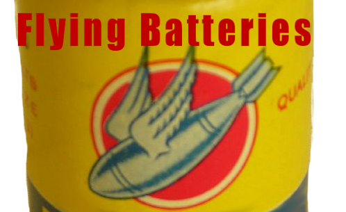
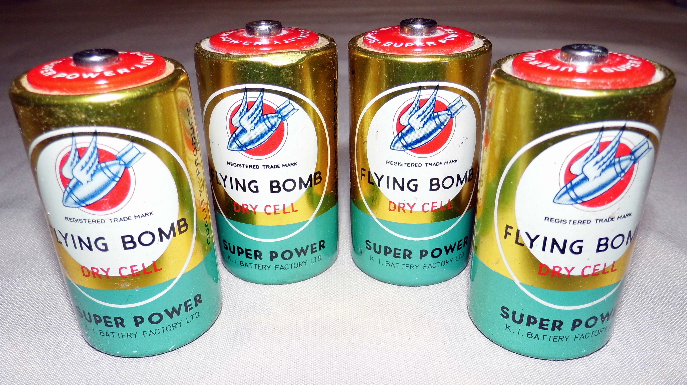
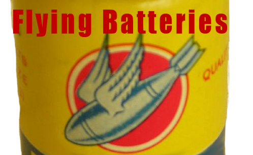
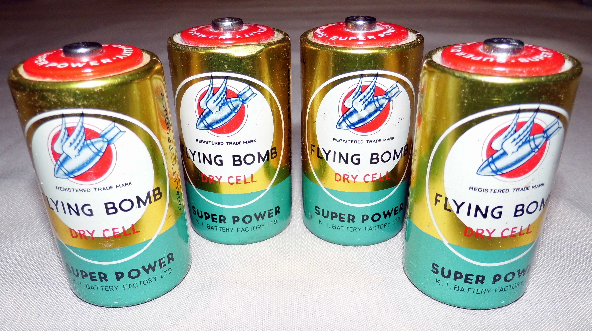

Credits of the reviews go to Carpelux, and myself.
Photo Credits included in div below.
Photo Credits included in div below.
Content from poster:
 Comes from WTNP events with permissions to share from the bands and events hosters
Comes from WTNP events with permissions to share from the bands and events hosters
Content for logo:  Comes from Audrey & Max - Titled: Flying Bomb! Modifyed so that the cropping of the image suits a logo design better with transpancy included. (CC BY-SA 2.0)
Content for the background images comes from: 
Joe Haupt Flying Bomb "D" Cell Batteries, Made in Hong Kong, K. I. Battery Factory Ltd. (A Good Brand Name?)s (CC BY-SA 2.0)
IFrame widget/embed for the right sidebar comes from: http://theflyingbatteries.bandcamp.com/album/life-in-monochrome
Images on the About page, part of the discogs section comes from: flyingbatteries.co.uk
Color Scheme from: Adobe Kuler - FBBG color theme
Comes from WTNP events with permissions to share from the bands and events hostersContent for logo:  Comes from Audrey & Max - Titled: Flying Bomb! Modifyed so that the cropping of the image suits a logo design better with transpancy included. (CC BY-SA 2.0)
Content for the background images comes from: 
Joe Haupt Flying Bomb "D" Cell Batteries, Made in Hong Kong, K. I. Battery Factory Ltd. (A Good Brand Name?)s (CC BY-SA 2.0)
IFrame widget/embed for the right sidebar comes from: http://theflyingbatteries.bandcamp.com/album/life-in-monochrome
Images on the About page, part of the discogs section comes from: flyingbatteries.co.uk
Color Scheme from: Adobe Kuler - FBBG color theme